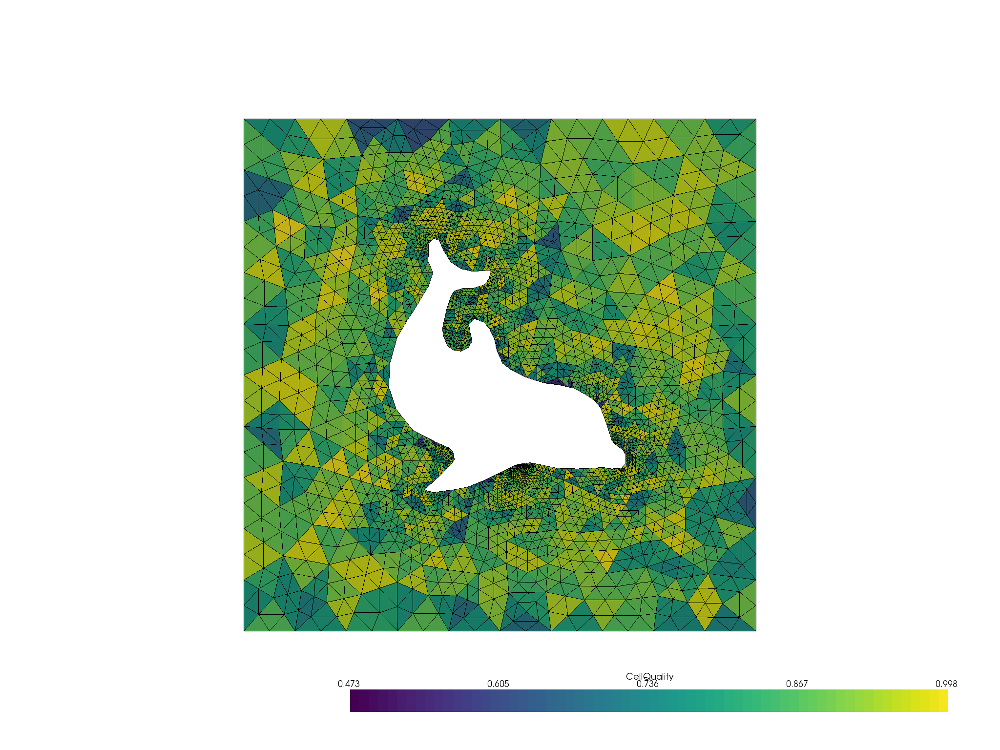

Note
Click here to download the full example code
Read FEniCS/Dolfin Meshes¶
PyVista leverages meshio to read many mesh formats not natively supported by VTK including the FEniCS/Dolfin XML format.
import pyvista as pv
from pyvista import examples
Let’s download an example FEniCS/Dolfin mesh from our example data repository. This will download an XML Dolfin mesh and save it to PyVista’s data directory.
saved_file, _ = examples.downloads._download_file("dolfin_fine.xml")
print(saved_file)
Out:
/home/vsts/.local/share/pyvista/examples/dolfin_fine.xml
As shown, we now have an XML Dolfin mesh save locally. This filename can be
passed directly to PyVista’s pyvista.read() method to be read into
a PyVista mesh.
dolfin = pv.read(saved_file)
dolfin
| UnstructuredGrid | Information |
|---|---|
| N Cells | 5400 |
| N Points | 2868 |
| X Bounds | 0.000e+00, 1.000e+00 |
| Y Bounds | 0.000e+00, 1.000e+00 |
| Z Bounds | 0.000e+00, 0.000e+00 |
| N Arrays | 0 |
Now we can do stuff with that Dolfin mesh!
qual = dolfin.compute_cell_quality()
qual.plot(show_edges=True, cpos="xy")

Out:
[(0.5, 0.5, 2.7320508075688776),
(0.5, 0.5, 0.0),
(0.0, 1.0, 0.0)]
Total running time of the script: ( 0 minutes 2.723 seconds)